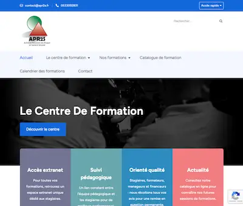

Étude de Cas : Création d'un Centre de Formation
De la page blanche à la certification en 12 mois.

← Retour aux études de cas
Le Contexte
En 2021, le projet APR2S n'était qu'une entité juridique. Le défi était de le transformer en un centre de formation pleinement opérationnel, capable de dispenser des formations certifiées dans le secteur exigeant de la sécurité et de la santé au travail.
Mon Rôle
En tant que Chef de Projet et Responsable Pédagogique, j'ai eu la pleine responsabilité de la construction du centre, de la stratégie de certification au déploiement des outils et des parcours.
Ma Démarche
- Pilotage des Certifications : J'ai mené de front les démarches pour obtenir les certifications et habilitations indispensables : Qualiopi, INRS (pour SST), Préfecture (pour SSIAP), CNAPS et ADEF (pour TFP APS). Cela a impliqué la constitution de dossiers complexes, la mise en conformité des processus et la gestion des audits.
- Déploiement de l'Écosystème Digital : J'ai sélectionné et paramétré de A à Z le logiciel de gestion Digiforma (LMS). En parallèle, j'ai développé le site web commercial apr2s.fr pour présenter l'offre et générer des leads.
- Ingénierie Pédagogique : J'ai conçu le catalogue complet, incluant plus de 10 parcours (SSIAP 1-2-3, TFP APS, Habilitations Électriques, etc.) et recruté l'équipe de formateurs experts.
Résultats
- 5+ certifications et habilitations clés obtenues.
- 1 centre de formation 100% opérationnel livré en 1 an.
- 1 écosystème digital fonctionnel (LMS + Site web) déployé.
- Premières ventes générées avant mon départ.